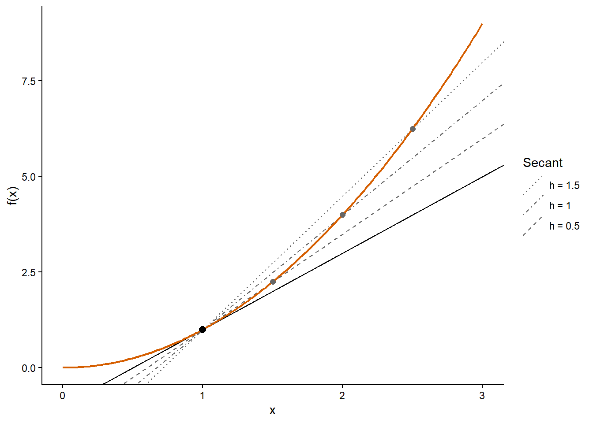

This page recalls the rules of calculus that Chapter 5 uses to find out the shape of a function from its formula: exponents and logarithms, limits, and derivatives. It is written for readers who have met these rules before and need to recall them, so it is a reference to work through with pen and paper and it does not replace a calculus course. Every rule comes with a worked case and each section ends with a short exercise. A longer set of problems with solutions is at the end (Section 8).
Throughout the page, \(x\) is the input of a function and \(y=f(x)\) is its output. The letters \(a\), \(b\), \(c\) and \(n\) stand for constants, that is, for quantities that do not change when \(x\) changes. In Chapter 5 (onwards) these constants are the parameters we estimate from data.
1 Exponents and logarithms
An exponent says how many times a quantity is multiplied by itself: \(x^3=x\cdot x\cdot x\). The definition is extended to exponents that are zero, negative or fractional in such a way that the following rules hold for any positive \(x\) and \(y\):
For example, \(x^2\sqrt{x}/x^3=x^{2+1/2-3}=x^{-1/2}=1/\sqrt{x}\). We will use these rules all the time to simplify the functions of Chapter 5 and their derivatives.
The exponential function is \(e^x\), where \(e\approx2.718\) is a constant chosen because it makes the derivative of the function as simple as it can be (see Section 4). It is also written \(\exp(x)\), which is how R writes it (exp()). Because it is a power of a positive number, \(e^x\) is positive for any \(x\), it equals 1 at \(x=0\), and it follows the rules of exponents: \(e^{x}e^{y}=e^{x+y}\), \((e^{x})^n=e^{nx}\) and \(e^{-x}=1/e^{x}\).
The logarithm is the inverse of the exponential function: \(\log x\) is the exponent to which \(e\) must be raised to obtain \(x\). That is,
The logarithm is only defined for positive values, with \(\log 1=0\) and \(\log e=1\). It is negative for \(0<x<1\) and positive for \(x>1\). The rules of exponents become the rules of logarithms:
\[
\log(xy)=\log x+\log y, \qquad \log\left(\frac{x}{y}\right)=\log x-\log y, \qquad
\log\left(x^n\right)=n\log x.
\]
In this book \(\log\) always means the natural logarithm (base \(e\)), as in R, where log() is the natural logarithm and log10() the logarithm in base 10. The two differ by a constant factor, \(\log_{10}x=\log x/\log 10\).
We will mostly use logarithms to solve an equation for a quantity that sits in an exponent. There are two cases that return throughout Chapter 5.
In the first case the unknown is inside an exponential. Suppose a pesticide residue on leaves declines with time as \(20e^{-0.3t}\) mg/kg, where \(t\) is the time in days. The residue is half of its initial value when \(20e^{-0.3t}=10\). We divide by 20 and take logarithms on both sides:
Note that the initial value cancelled: in general, \(ae^{-bx}=a/2\) gives \(x=\log 2/b\) whatever the value of \(a\).
In the second case the unknown is the base or the exponent of a power, \(y=ax^b\). Suppose \(y=2x^{1.5}\) and we want the value of \(x\) for which \(y=54\). We divide by 2 and raise both sides to the power \(1/1.5\), which gives \(x=27^{1/1.5}=27^{2/3}=9\). If instead we knew that \(y=54\) at \(x=9\) and that \(a=2\), we could solve for the exponent by taking logarithms: \(\log 27=b\log 9\), so \(b=\log 27/\log 9=1.5\). We can verify our math with R:
# Time (days) at which 20 * exp(-0.3 * t) has fallen to half of its initial value,# and the value of the function at that time (mg/kg).t_half =log(2) /0.3t_half
[1] 2.310491
20*exp(-0.3* t_half)
[1] 10
# Solve 54 = 2 * x^1.5 for x, and 54 = 2 * 9^b for b.(54/2)^(1/1.5)
[1] 9
log(54/2) /log(9)
[1] 1.5
Practice: exponents and logarithms
Write \(\log\left(e^{3}x^{2}\right)\) without the exponential.
Solve \(20e^{-0.5t}=5\) for \(t\).
Solution
The logarithm of a product is a sum of logarithms, so \(\log\left(e^{3}x^{2}\right)=\log\left(e^{3}\right)+\log\left(x^{2}\right)=3+2\log x\).
Dividing by 20 gives \(e^{-0.5t}=1/4\), so \(-0.5t=-\log 4\) and \(t=\log 4/0.5\approx2.77\).
2 Limits
The limit of a function \(f(x)\) as \(x\) approaches a value \(x_0\) is the value that \(f(x)\) comes arbitrarily close to as \(x\) comes close to \(x_0\). We write it as \(\lim_{x\to x_0}f(x)\). In Chapter 5 we are mostly interested in the two ends of a function: what happens as \(x\) grows without bound, written \(x\to\infty\), and what happens as \(x\) approaches zero (see Limits and asymptotes). When the function is defined at \(x_0\) and has no jump there, its limit is the value \(f(x_0)\). For example, \(ae^{-bx}\to a\) as \(x\to0\), because \(e^0=1\).
For limits at infinity with positive \(b\) and \(n\), three results are enough to start with:
When a function is a sum of several terms, its behaviour for large \(x\) is set by the term that grows fastest. Exponentials grow faster than any power of \(x\), a higher power grows faster than a lower power, and any power grows faster than a constant or a logarithm. In other words, for large \(x\) we can keep the fastest-growing term of a sum and ignore the others. For small \(x\) the ranking is reversed: the lowest power of \(x\) is the one that remains.
For a ratio of two sums, this idea is applied by dividing the numerator and the denominator by the highest power of \(x\). For the function \(f(x)=ax/(b+x)\):
In the same way, \((2x^2+3x)/(x^2+5x)\) approaches \(2/1=2\) as \(x\to\infty\), because the terms in \(x^2\) dominate. As \(x\to0\) the terms in \(x\) dominate and the ratio approaches \(3/5\).
The ranking of terms is a consequence of L’Hôpital’s rule.1 The rule applies to a ratio \(f(x)/g(x)\) in which numerator and denominator both approach zero or both approach infinity, so that the limit of the ratio cannot be read directly. In that case,
where \(f'\) and \(g'\) are the derivatives of \(f\) and \(g\) (Section 3), provided that the limit on the right exists. The rule also holds for \(x\to\infty\). For example, the function \(xe^{-bx}\) is the product of a term that grows and a term that approaches zero. Written as a ratio it is \(x/e^{bx}\), in which both parts approach infinity, so
That is, the exponential wins. A limit can always be checked numerically by evaluating the function at a large (or a small) value of \(x\):
# a * x / (b + x) with a = 10 and b = 2 approaches a = 10 for large x.10*1e6/ (2+1e6)
[1] 9.99998
# x * exp(-b * x) with b = 0.5 approaches zero for large x.100*exp(-0.5*100)
[1] 1.92875e-20
Practice: limits
For the function \(f(x)=\dfrac{5x+1}{2x+10}\), calculate \(f(0)\) and \(\lim_{x\to\infty}f(x)\).
Solution
At zero the function is defined, so \(f(0)=1/10=0.1\). For large \(x\) we divide numerator and denominator by \(x\), which gives \((5+1/x)/(2+10/x)\). Both \(1/x\) and \(10/x\) approach zero, so the limit is \(5/2=2.5\).
3 The derivative
The derivative of a function at a point is the slope of the function at that point: the change in \(y\) per unit change in \(x\). For a straight line the slope is the same everywhere. For a curve it changes from point to point, and it is defined as follows. Take two points on the curve, at \(x\) and at \(x+h\). The straight line through them is a secant and its slope is the change in \(y\) divided by the change in \(x\):
\[
\frac{f(x+h)-f(x)}{h}.
\]
As \(h\) becomes smaller, the secant approaches the tangent, the straight line that touches the curve at \(x\) (Figure 1). The derivative is the slope of the tangent, that is, the limit of the slope of the secant:
The two notations mean the same.2 We write \(f'(x)\) in running text and \(df/dx\) when we need to show with respect to which quantity the derivative is taken. Since a derivative is a change in \(y\) divided by a change in \(x\), its units are the units of \(y\) divided by the units of \(x\). If \(y\) is the height of a plant in cm and \(x\) is time in days, \(f'(x)\) is a growth rate in cm/day.

Figure 1: The function \(f(x)=x^2\) with three secants through the point at \(x=1\) (grey lines, for \(h=1.5\), 1 and 0.5) and the tangent at that point (black line). The slopes of the secants are 3.5, 3 and 2.5, and they approach the slope of the tangent, which is 2.
We can calculate the derivative of \(f(x)=x^2\) directly from the definition:
So the slope of \(x^2\) is 2 at \(x=1\), as in Figure 1, and 6 at \(x=3\). In practice we do not go back to the definition: the rules of the next section give the derivative of any function that is built from powers, exponentials and logarithms.
Practice: a derivative from its definition
Use the definition to calculate the derivative of \(f(x)=x^2+3x\).
Solution
The numerator of the secant slope is \((x+h)^2+3(x+h)-x^2-3x=2xh+h^2+3h\). Dividing by \(h\) gives \(2x+h+3\), and as \(h\to0\) this approaches \(f'(x)=2x+3\).
4 Rules of differentiation
Differentiation is the calculation of a derivative. The rules below are all that Chapter 5 needs (see Derivatives, slopes and curvature). In the table, \(g\) and \(h\) are functions of \(x\), and \(c\) and \(n\) are constants.
Rule
Function
Derivative
Constant
\(c\)
\(0\)
Constant multiple
\(c\,g(x)\)
\(c\,g'(x)\)
Sum
\(g(x)+h(x)\)
\(g'(x)+h'(x)\)
Power
\(x^n\)
\(nx^{n-1}\)
Exponential
\(e^x\)
\(e^x\)
Logarithm
\(\log x\)
\(1/x\)
Product
\(g(x)\,h(x)\)
\(g'(x)\,h(x)+g(x)\,h'(x)\)
Quotient
\(\dfrac{g(x)}{h(x)}\)
\(\dfrac{g'(x)\,h(x)-g(x)\,h'(x)}{h(x)^2}\)
Chain
\(g(h(x))\)
\(g'(h(x))\,h'(x)\)
Constant, constant multiple, sum and power. A constant does not change, so its slope is zero. A constant that multiplies a function stays in front of the derivative, and a sum is differentiated term by term. Together with the power rule, this gives the derivative of any polynomial:
The power rule holds for any exponent, including negative and fractional ones. Hence, a power law \(ax^b\) has the derivative \(abx^{b-1}\), and after writing \(1/x=x^{-1}\) and \(\sqrt{x}=x^{1/2}\) we obtain
Exponential and logarithm. The exponential function is its own derivative, and the derivative of the logarithm is \(1/x\). For example, the derivative of \(3e^x+2\log x\) is \(3e^x+2/x\).
Chain rule. The chain rule is for a function of a function, \(g(h(x))\), where \(h\) is the inner function and \(g\) the outer function. We differentiate the outer function, leaving the inner function in place, and multiply by the derivative of the inner function. It is the rule we will use most, because the functions of Chapter 5 contain \(x\) in the form \(-bx\), \(x-c\) or \(b+x\). For \(e^{-bx}\) the outer function is the exponential and the inner function is \(-bx\), with derivative \(-b\):
In the same way, the derivative of \(\log(a+bx)\) is \(b/(a+bx)\), and the derivative of \((b+x)^{-1}\) is \(-(b+x)^{-2}\), since the inner function \(b+x\) has derivative 1.
Product rule. The derivative of a product is the derivative of the first factor times the second, plus the first factor times the derivative of the second. For \(xe^{-bx}\) the factors are \(x\) and \(e^{-bx}\), and the chain rule gave us the derivative of the second:
Quotient rule. For a ratio, the order of the terms in the numerator matters because of the minus sign: the derivative of the numerator comes first. For \(x/(b+x)\):
The second derivative of a function is the derivative of its derivative, written \(f''(x)\) or \(d^2f/dx^2\). It is the rate at which the slope changes, and its units are the units of \(y\) divided by the square of the units of \(x\). Its sign describes the curvature of the function. Where \(f''(x)<0\) the slope decreases as \(x\) increases and the function bends downwards: it is concave. Where \(f''(x)>0\) the slope increases and the function bends upwards: it is convex. A straight line has \(f''(x)=0\) everywhere.
For example, the first derivative of the exponential decay \(f(x)=ae^{-bx}\) (with positive \(a\) and \(b\)) is \(f'(x)=-abe^{-bx}\), by the chain rule. Applying the same rule again gives
The first derivative is negative and the second derivative is positive for every \(x\). So the function decreases everywhere and it is convex: its slope becomes less and less negative, which is how the function levels off towards zero.
We will use second derivatives in Chapter 5 to tell a maximum from a minimum and to find the point where a curve is steepest. Chapter 4 already used the second derivative of the log-likelihood at its maximum to calculate standard errors.
Practice: curvature
Calculate the first and second derivatives of \(f(x)=\dfrac{x}{1+x}\) for \(x\geq0\). Is the function concave or convex?
Solution
By the quotient rule, \(f'(x)=\dfrac{(1+x)-x}{(1+x)^2}=(1+x)^{-2}\). By the power and chain rules, \(f''(x)=-2(1+x)^{-3}\). For \(x\geq0\) the first derivative is positive and the second is negative, so the function increases and is concave: it rises more and more slowly.
6 Partial derivatives
Many functions depend on more than one quantity. The output of \(f(x,y)\) depends on two inputs, and the output of a function such as \(ax^b\) depends on its parameters \(a\) and \(b\) as well as on \(x\); to show this we write \(f(x;a,b)\). The partial derivative of a function with respect to one of these quantities is the derivative that we obtain when all the others are held fixed, that is, when they are treated as constants. It is written with the symbol \(\partial\) instead of \(d\), as in \(\partial f/\partial a\), and it tells us how much the output changes per unit change in that quantity alone. No new rules are needed.
For the power law \(f(x;a,b)=ax^b\), the partial derivative with respect to \(x\) is the derivative of the previous sections, \(abx^{b-1}\). With respect to \(a\), the function is a constant (\(x^b\)) times \(a\). With respect to \(b\), we first write \(x^b=e^{b\log x}\) and then apply the chain rule, with \(\log x\) as a constant:
For example, with \(a=2\) and \(b=1.5\) the function equals 16 at \(x=4\). There, increasing \(a\) by a small amount increases the output by \(4^{1.5}=8\) times that amount, and increasing \(b\) by a small amount increases it by \(16\log4\approx22.2\) times that amount.
Calculate the partial derivatives of \(f(x;a,b)=ae^{-bx}\) with respect to \(a\) and to \(b\).
Solution
With respect to \(a\), the exponential is a constant factor, so \(\partial f/\partial a=e^{-bx}\). With respect to \(b\), we use the chain rule with inner function \(-bx\), whose derivative with respect to \(b\) is \(-x\): \(\partial f/\partial b=-axe^{-bx}\).
7 Checking with R
R can differentiate a formula, which is a convenient way to check a derivative calculated on paper. The function expression() stores a formula without evaluating it, D() returns its derivative with respect to the quantity named in the second argument, and eval() calculates the value of the result for the values given in a list:
# Derivative of x * exp(-b * x) with respect to x. D() does not simplify the result.slope_formula =D(expression(x *exp(-b * x)), "x")slope_formula
exp(-b * x) - x * (exp(-b * x) * b)
# Value of the derivative at x = 1 for b = 0.5, and the formula derived by hand.eval(slope_formula, list(x =1, b =0.5))
[1] 0.3032653
(1-0.5*1) *exp(-0.5*1)
[1] 0.3032653
# Partial derivative of the power law with respect to b, at x = 4, a = 2 and b = 1.5.eval(D(expression(a * x^b), "b"), list(x =4, a =2, b =1.5))
[1] 22.18071
A second check needs no formula for the derivative at all. By definition, the derivative is close to the slope of a secant with a small step \(h\) (a finite difference):
# Slope of the secant between x = 1 and x = 1 + h, for a small step h.f =function(x, b =0.5) { x *exp(-b * x)}h =1e-6(f(1+ h) -f(1)) / h
The problems below are grouped by topic and become harder within each group. Solve them with pen and paper before opening the solutions.
Practice: exponents and logarithms (problems 1 to 4)
Simplify \(\dfrac{x^3x^{-1}}{\sqrt{x}}\) and \(\left(e^{2x}\right)^3e^{-x}\).
Write \(\log\left(ax^b\right)\) as a sum, and simplify \(e^{\log a-bx}\).
A population of bacteria grows as \(n(t)=50e^{0.2t}\) cells, where \(t\) is the time in hours. After how many hours does it reach 400 cells?
A power law \(y=ax^b\) passes through the points \((x,y)=(2,12)\) and \((8,96)\). Calculate \(b\) and then \(a\).
Solution
\(x^{3-1-1/2}=x^{3/2}\), and \(e^{6x}e^{-x}=e^{5x}\).
\(\log\left(ax^b\right)=\log a+b\log x\), and \(e^{\log a-bx}=e^{\log a}e^{-bx}=ae^{-bx}\).
\(50e^{0.2t}=400\) gives \(e^{0.2t}=8\), so \(t=\log 8/0.2\approx10.4\) hours.
Dividing the second equation by the first removes \(a\): \(96/12=(8/2)^b\), that is, \(8=4^b\). Taking logarithms, \(b=\log 8/\log 4=1.5\). Then \(a=12/2^{1.5}\approx4.24\).
Practice: limits (problems 5 to 7)
Calculate the limits of \(f(x)=\dfrac{2x^2+x}{x^2+4x}\) as \(x\to0\) and as \(x\to\infty\).
For \(f(x)=\dfrac{8}{1+3e^{-0.5x}}\), calculate \(f(0)\) and the limits as \(x\to\infty\) and as \(x\to-\infty\).
Use L’Hôpital’s rule to calculate \(\lim_{x\to\infty}\dfrac{\log x}{x}\) and \(\lim_{x\to0}\dfrac{e^{2x}-1}{x}\).
Solution
For small \(x\) the lowest powers remain: dividing by \(x\) gives \((2x+1)/(x+4)\), which approaches \(1/4\). For large \(x\) we divide by \(x^2\) to obtain \((2+1/x)/(1+4/x)\), which approaches 2.
\(f(0)=8/(1+3)=2\). As \(x\to\infty\), \(e^{-0.5x}\to0\) and \(f(x)\to8\). As \(x\to-\infty\), \(e^{-0.5x}\to\infty\), so the denominator grows without bound and \(f(x)\to0\).
In the first ratio both parts approach infinity, and the ratio of the derivatives is \((1/x)/1\), which approaches 0: a logarithm grows more slowly than \(x\). In the second ratio both parts approach zero, and the ratio of the derivatives is \(2e^{2x}/1\), which approaches 2.
Practice: one rule at a time (problems 8 to 10)
Calculate the derivative of each function.
\(f(x)=4x^3-2x+7\)
\(f(x)=3\sqrt{x}+\dfrac{2}{x^2}\)
\(f(x)=5e^x-2\log x\)
Solution
Term by term with the power rule: \(f'(x)=12x^2-2\).
Written with exponents, \(f(x)=3x^{1/2}+2x^{-2}\), so \(f'(x)=\tfrac{3}{2}x^{-1/2}-4x^{-3}=\dfrac{3}{2\sqrt{x}}-\dfrac{4}{x^3}\).
\(f'(x)=5e^x-\dfrac{2}{x}\).
Practice: chain, product and quotient rules (problems 11 to 13)
Calculate the derivative of each function.
\(f(x)=e^{-x^2/2}\) and \(f(x)=\log(1+3x)\)
\(f(x)=x^2\log x\)
\(f(x)=\dfrac{1+x}{1+2x}\)
Solution
Chain rule. For the first function the inner function is \(-x^2/2\), with derivative \(-x\), so \(f'(x)=-xe^{-x^2/2}\). For the second the inner function is \(1+3x\), with derivative 3, so \(f'(x)=\dfrac{3}{1+3x}\).
Calculate the derivative of \(f(x)=\sqrt{x}\,e^{-x}\) for \(x>0\). At which value of \(x\) is the slope zero?
Calculate the derivative of \(f(x)=\log\left(1+e^{x}\right)\) and show that it can be written as \(1/\left(1+e^{-x}\right)\).
Calculate the derivative of \(f(x)=\dfrac{e^{-x}}{1+x}\).
Solution
Product rule, with the power rule for the first factor and the chain rule for the second: \[
f'(x)=\frac{1}{2\sqrt{x}}e^{-x}-\sqrt{x}\,e^{-x}=\frac{(1-2x)\,e^{-x}}{2\sqrt{x}}.
\] The exponential and the square root are positive, so the slope is zero where \(1-2x=0\), at \(x=1/2\).
Chain rule, with outer function \(\log u\) and inner function \(u=1+e^x\): \(f'(x)=\dfrac{e^x}{1+e^x}\). Dividing numerator and denominator by \(e^x\) gives \(\dfrac{1}{e^{-x}+1}\).
Quotient rule, with the chain rule for the numerator: \[
f'(x)=\frac{-e^{-x}(1+x)-e^{-x}\cdot1}{(1+x)^2}=-\frac{(2+x)\,e^{-x}}{(1+x)^2}.
\]
Practice: second derivatives (problems 17 and 18)
Calculate the second derivative of \(f(x)=x^3-6x^2\). For which values of \(x\) is the function concave, and for which is it convex?
Do the same for \(f(x)=\log\left(1+x^2\right)\) with \(x\geq0\).
Solution
\(f'(x)=3x^2-12x\) and \(f''(x)=6x-12\). The second derivative is negative for \(x<2\), where the function is concave, and positive for \(x>2\), where it is convex.
By the chain rule, \(f'(x)=\dfrac{2x}{1+x^2}\). By the quotient rule, \[
f''(x)=\frac{2\left(1+x^2\right)-2x\cdot2x}{\left(1+x^2\right)^2}
=\frac{2\left(1-x^2\right)}{\left(1+x^2\right)^2}.
\] The denominator is positive, so the sign is that of \(1-x^2\): the function is convex for \(x<1\) and concave for \(x>1\).
Practice: partial derivatives (problems 19 and 20)
Calculate the partial derivatives of \(f(x,y)=x^2y+3y^2\) with respect to \(x\) and to \(y\).
Calculate the partial derivatives of \(f(x;a,b)=\dfrac{a}{b+x}\) with respect to \(a\) and to \(b\), and their values at \(x=3\) for \(a=10\) and \(b=2\).
Solution
With \(y\) fixed, \(\partial f/\partial x=2xy\). With \(x\) fixed, \(\partial f/\partial y=x^2+6y\).
With respect to \(a\), the function is \(a\) times a constant: \(\partial f/\partial a=\dfrac{1}{b+x}\). With respect to \(b\), we write the function as \(a(b+x)^{-1}\) and use the power and chain rules: \(\partial f/\partial b=-\dfrac{a}{(b+x)^2}\). At \(x=3\) with \(a=10\) and \(b=2\) the values are \(1/5=0.2\) and \(-10/25=-0.4\).
Footnotes
The rule is named after de l’Hôpital, who printed it in his textbook of 1696; it is due to his teacher Johann Bernoulli.↩︎
The notation \(df/dx\) is due to Leibniz (1675) and \(f'\) to Lagrange (1797); both are in use.↩︎